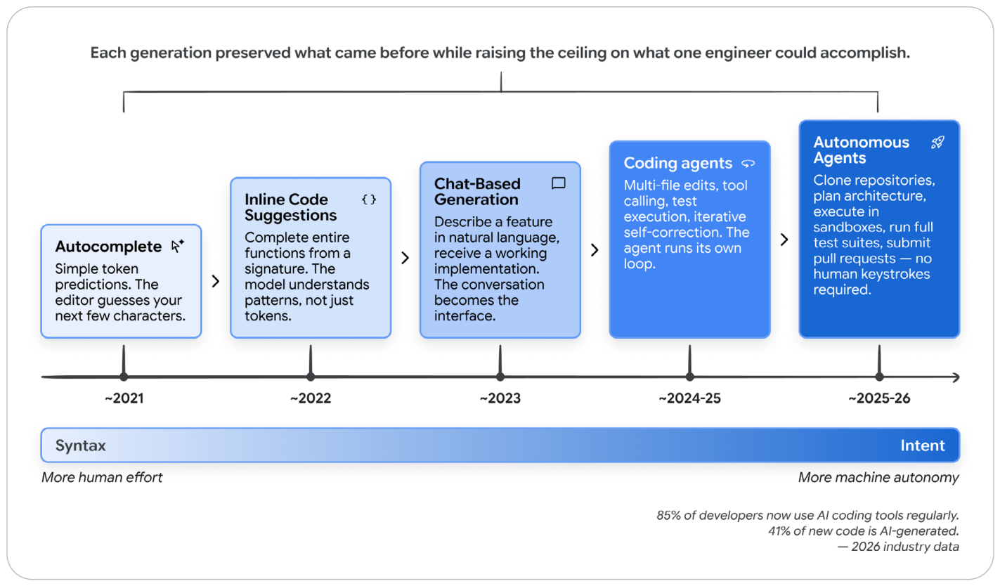
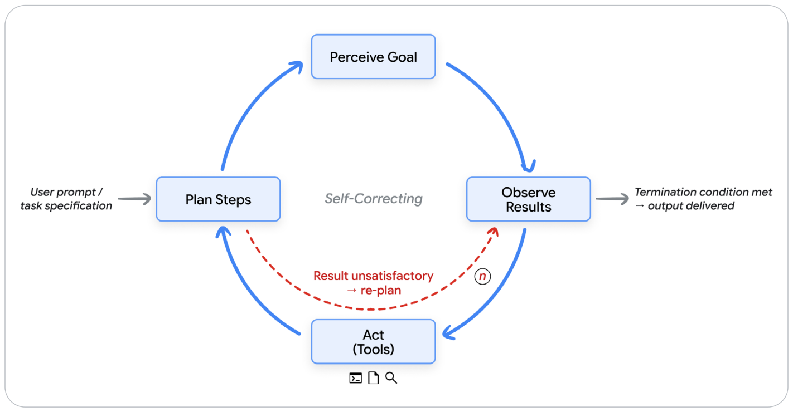
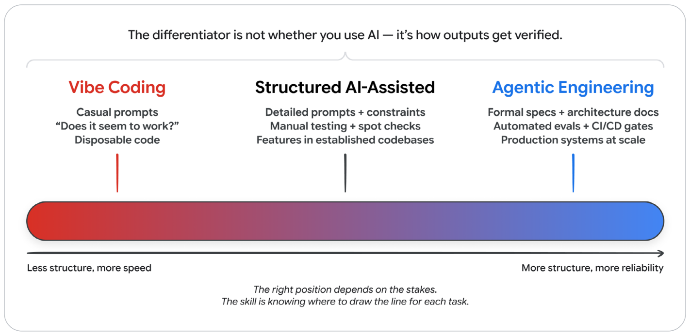
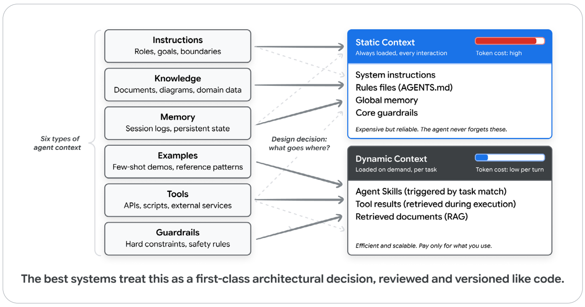
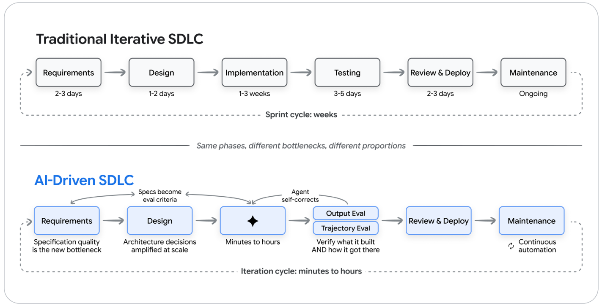
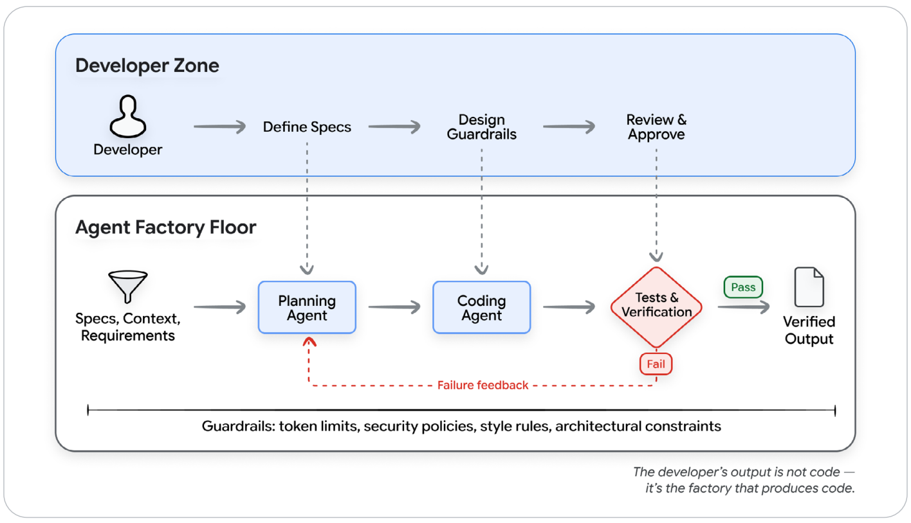
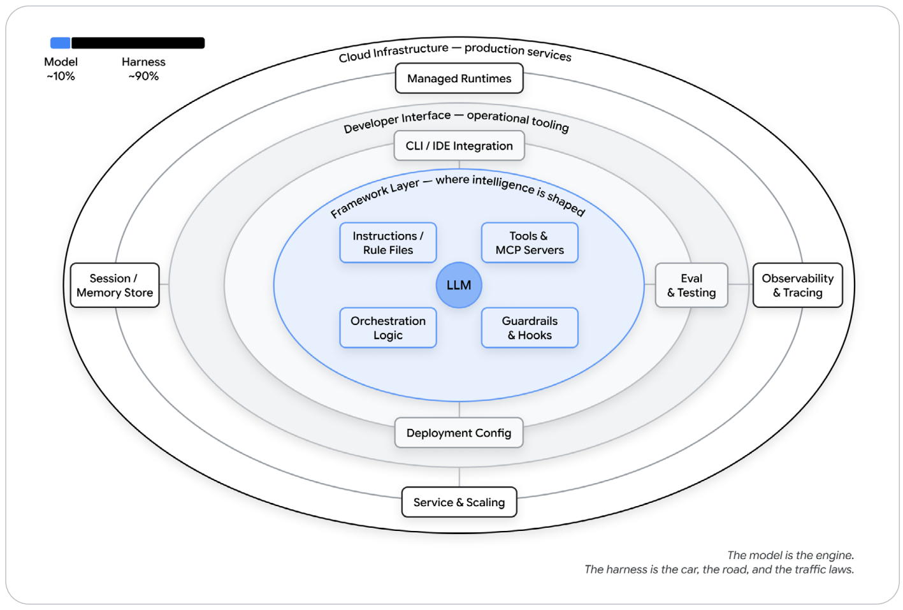
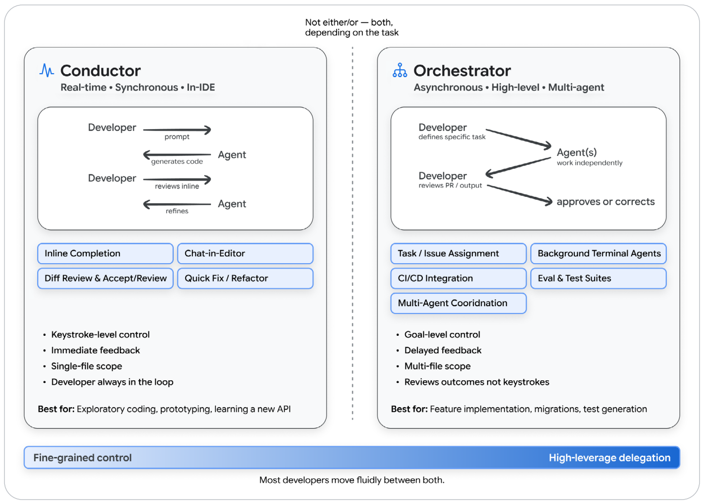
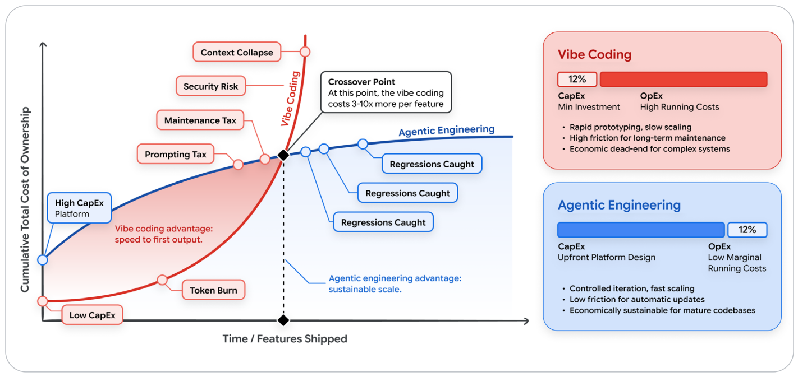

基于 Vibe Coding 的新一代软件开发生命周期
The New SDLC With Vibe Coding: From ad-hoc prompting to Agentic Engineering

致谢 (Acknowledgements)
内容贡献者 (Content contributors)：
Elia Secchi、Julia Wiesinger、Anant Nawalgaria
策划与编辑 (Curators and editors)：
Anant Nawalgaria
视觉设计 (Designer)：
Michael Lanning
1. 引言：软件工程的深刻范式转变 (Introduction)
在计算机诞生以来的绝大部分历史中，编程本质上就是一场多层翻译的接力：首先在人类现实语境中理解问题，继而在抽象逻辑中构想解决方案，最终将其手工翻译为机器能够执行的精准程序语法。每一次转换都会引入摩擦阻力与认知损耗。而今天，这种摩擦阻力正在急剧瓦解。软件工程正在迎来继高级编程语言发明以来最波澜壮阔的一场大革命。
数十年来，开发者与计算机交互的主要界面一直是语法：花括号、分号、类型注解，以及各种编程语言严苛至极的语法法则。那个时代正在不可逆转地走向终结。
一个全新的范式已经降临：开发者只需清晰表达他们“想要构建什么 (What)”，而无需事无巨细地指挥机器“如何一步步实现 (How)”。具体的实现细节全权交由机器处理；人类则专注于提供意图、设计宏观架构，并在关键节点进行专业判断。这绝不是虚无缥缈的遥远未来，而是数百万专业工程师每天正在经历的日常现实。截至 2026 年初的工业普查数据显示：85% 的专业软件工程师已在日常开发中深度使用 AI 编码智能体，51% 的人每天高频使用，全行业约 41% 的新增代码已由 AI 自主生成1。
这场变革并非凭空在一夜之间爆发，而是经历了一场清晰的代际接力演进（见图 1）：
- 代码补全时代 (~2021)：IDE 编辑器内部基于上下文的简单单 Token 预测。
- 行内建议时代 (~2022)：能够根据函数签名与注释，直接预测补全一整段复杂函数实现。
- 对话生成时代 (~2023)：在聊天窗口中用自然语言描述需求，大模型输出完整代码，开发者手动复制粘贴到工程中。
- 编码智能体时代 (~2024-2025)：多文件协同修改、自主工具调用、自动测试运行与反思纠错，智能体开始自主运转其内部闭环。
- 全自主智能体时代 (~2025-2026)：智能体能够自主克隆代码仓库、规划跨系统架构、在云端隔离沙箱中编写代码、运行完整测试用例套件，甚至自动提交 Pull Request——全程无需人类敲击任何一行代码。

- ~2021: Autocomplete (代码补全)：简单 Token 预测，编辑器猜测接下来的几个字符。
- ~2022: Inline Code Suggestions (行内代码建议)：根据函数签名补全整段函数，模型理解模式而非孤立字符。
- ~2023: Chat-Based Generation (对话生成)：自然语言描述特性并获取可运行代码，对话窗口成为人机主界面。
- ~2024-25: Coding agents (编码智能体)：跨文件多文件修改、工具调用、沙箱测试、迭代自愈纠错。
- ~2025-26: Autonomous Agents (全自主智能体)：自主克隆仓库、规划宏观架构、执行测试套件、提交生产 PR，无需人类键入。
- 演进轴向：左端为注重微观“语法 (Syntax)”与高强度人类劳力；右端迈向“意图 (Intent)”与高度机器自治。
这对经典软件开发生命周期（SDLC）带来了天翻地覆的冲击。从需求调研、架构设计、代码实现、测试验证，一直到发布部署与长期运维，每一个传统环节都在被 AI 重新洗牌。然而，这一转变绝非铁板一块，而是呈现出极其广阔的能力光谱：光谱的一端是随性而为的“Vibe Coding（氛围感随意编程）”——开发者输入一两句模糊提示，对 AI 吐出的内容照单全收；而另一端则是严谨自律的“智能体工程（Agentic Engineering）”——AI 作为高能执行引擎，被严格规范在人类精密设计的约束护栏、测试套件与多重反馈回路之中，人类牢牢掌控架构方向、正确性与交付质量。
明确这两者的界限至关重要。如果你向公司的 CTO 汇报说：“我们团队正在用 Vibe Coding 来编写我们核心的实时资金结算系统”，这必然会、也理应引发最高级别的工程警报；但如果你向 CTO 汇报：“我们团队践行严格的智能体工程规范，AI 在人类设定的架构护栏与全覆盖测试契约的约束下执行落地，测试覆盖率确保系统 100% 正确”，这完全是两个截然不同维度的专业对话。
为什么是这篇白皮书，为什么是现在？ (Why this paper, why now)
崭新的工具、框架与范式几乎每周都在井喷涌现。工程团队迫切需要一套通用的思维框架来锚定方向——不是一份几个月后就会过时的特定工具使用手册，而是一整套经过深思熟虑的第一性原理与心智模型，无论底层具体工具如何轮替迭代，这些准则都将历久弥坚。
目标读者 (Who this paper is for)
本书专为广大软件工程师、技术与业务主管、系统架构师与工程团队 Leader 撰写。他们渴望深刻理解 AI 是如何系统性重塑 SDLC 的，并希望在引入这股强大变革力量的同时，绝不向生产级软件所必需的工程严谨度妥协半分。我们默认读者已对现代敏捷开发与 DevOps 实践了然于胸，但无需具备深度的机器学习底层算法背景。
2. 从语法到意图的转变 (The shift from syntax to intent)
在深入探讨之前，我们需要对“智能体”究竟是什么，以及“Vibe Coding”究竟意味着什么建立起完全统一、毫无歧义的共识认知。
AI 智能体：核心机制温故 (AI Agents: A Quick Refresher)
AI 智能体是一个能够自主感知目标、规划达成步骤、通过外部工具采取行动、观察反馈结果，并不断循环迭代直至目标圆满达成或触发终止条件的软件系统。普通的聊天机器人只能在生成一段文本后被动等待下一次 Prompt；而智能体则拥有自主推进的主循环。只要你在起点赋予它一个目标，它就会在每一步自主推演下一步应当采取什么行动。

(The Agent Loop - Perceive, plan, act, observe, iterate)
- Perceive Goal (感知目标)：接收来自用户的需求提示词或系统事件。
- Plan Steps (规划步骤)：推理大模型进行任务拆解与思维链推导。
- Act - Tools (工具行动)：向文件系统、执行终端、远程 API 或数据库发起调用。
- Observe Results (观察结果)：捕获工具执行的真实输出。
- Self-Correcting / Re-plan (自愈反思与重新规划)：如果结果不符合预期，自动重构执行计划；当终止条件达成时，正式交付最终成果。
任何一个智能体，无论设计得多么精巧，其底层都由五大支柱构建而成（详见我们 2025 年 11 月发布的《智能体引论》第一篇白皮书2）：
- 模型 (The Model)：推理核心，负责审阅上下文并决定下一步动作。
- 工具 (Tools)：连接现实的触手，包括 API、代码执行沙箱、数据库等。
- 记忆 (Memory)：状态机，保持短期上下文与跨会话的长期经验。
- 编排层 (Orchestration)：驱动主循环运转的代码中枢，负责组装上下文与调度工具。
- 部署与运行时 (Deployment)：将原型转变为企业级生产服务的底层云原生基建。
什么是 Vibe Coding？ (What is vibe coding?)
2025 年 2 月，著名计算机科学家 Andrej Karpathy 在社交媒体上发表了一段对崭新编程方式的生动描述，迅速在整个软件工程界激起了广泛共鸣。他写道：这是一种“完全屈服于氛围（fully give in to the vibes）、拥抱指数级增长、甚至忘记底层代码存在”的新范式。在这种模式下，开发者用自然语言描述自己想要什么，直接接受 AI 输出的代码；当遇到报错时，直接把错误日志无脑复制粘贴回对话框，要求 AI 再次修复2。
这一名词之所以瞬间火爆全网，是因为它精准捕捉到了一种正在发生的现实：成千上万的开发者实际上已经在以这种方式工作，只是此前缺少一个贴切的词汇来定义它。然而，在随后的几个月内，“Vibe Coding”被无限泛化滥用，沦为了所有“AI 辅助编程”的代名词，从而带来了严重的工程困惑：一名资深技术专家使用 AI 助手实现一个经过严格架构评审的微服务模块，难道也叫 Vibe Coding 吗？一个工程团队利用多智能体协作执行一套经过精密设计的分布式系统，也是 Vibe Coding 吗？当这个词被无限泛化后，它便开始丧失指导意义。
到了 2026 年初，Karpathy 本人公开撰文承认最初的表述过于狭隘与偏颇，并正式引入了“智能体工程（Agentic Engineering）”这一术语，用以指代光谱上那个纪律严明、工程完备的严谨形态4。
从 Vibe Coding 到智能体工程的光谱 (The spectrum: vibe coding to agentic engineering)
我们不应当把 Vibe Coding 和智能体工程看作非此即彼的二元对立，而应该将其视为同一连续光谱的两个端点。区分它们的核心判据，绝对不是你是否使用了 AI，而是你为 AI 的输出搭建了多少结构化规范、自动化验证机制以及人类专业判断力。
| 比较维度 (Dimension) | Vibe Coding (氛围编程) | 结构化 AI 辅助编程 (Structured AI-Assisted) | 智能体工程 (Agentic Engineering) |
|---|---|---|---|
| 意图规范声明 (Intent Specification) | 随意、模糊的自然语言随口提示 | 包含详细上下文、边界约束与示例的结构化 Prompt | 正式的技术规格文档（Specs）、架构蓝图、持久化 Memory 配置文件 |
| 结果验证机制 (Verification) | “肉眼看看好像能跑就行” | 人工手动测试、核心路径抽查 | 全自动测试套件、CI/CD 自动化门禁、大模型独立裁判（LM Judges） |
| 对代码库的理解 (Codebase Understanding) | 极低；开发者甚至完全不阅读 AI 生成的代码 | 选择性审查关键路径与核心算法 | 人类透彻审视宏观架构；AI 负责攻克实现细节 |
| 异常与错误排查 (Error Handling) | 复制粘贴报错日志，甩给 AI 碰运气修复 | 人类工程师定位根因，指挥 AI 执行修复 | 智能体在划定边界内自主排查；人类架构师主导解决系统性架构缺陷 |
| 适用业务范围 (Appropriate Scope) | 周末原型、临时脚本、黑客松个人玩具项目 | 成熟代码库中局部独立的非核心业务特性 | 企业级核心生产系统、团队级协同大规模长期交付 |
| 风险暴露画像 (Risk Profile) | 极高风险；仅适用于随时可抛弃的废弃代码 | 中等风险；在关键检查点由人类把关 | 极低风险；全生命周期实施系统性自动化核验 |

- 分水岭判据：不在于是否引入了 AI，而在于输出结果如何被系统化验证。
- 左端 (Vibe Coding)：更少约束，更追求初始敲击速度；适合随手探索与原型搭建。
- 右端 (Agentic Engineering)：更强约束，全自动化评测套件 + CI/CD 门禁，具备极致生产级可靠性与规模化交付能力。
你在这一光谱上所选择的落脚点，完全取决于所涉业务的风险代价（Stakes）。周末做一个供自己玩耍的轻量原型，完全可以尽情 Vibe Coding；而开发一个承载真实资金流水的企业级核心支付 API，则必须严格践行智能体工程。真正的专业工程师的卓越技艺，恰恰在于能够针对不同任务的风险，精确拿捏该划在光谱的哪个位置。
两大端点之间最根本的分水岭，在于输出物如何被科学验证。在 Vibe Coding 中，验证是可选的甚至被完全忽略的；而在智能体工程中，两大基石机制紧密啮合协同：
- 确定性测试 (Tests)：用于验证系统中确定性的部分——给定特定的输入入参，函数是否精确断言产出了预期的输出。由确定性代码进行机器核验。
- 评测体系 (Evaluations / Evals)：用于验证系统中非确定性的部分——智能体在复杂的决策空间中，是否沿着正确的轨迹行进？是否精准挑选了正确的工具？生成的最终回复是否跨过了企业严苛的质量门槛？评测依托标注测试集、评分细则标准与大模型独立裁判（LM Judges）进行自动化审判。
如果缺乏这套双重验证机制，无论你的 Prompt 写得多么天花乱坠，你的本质依然只是在 Vibe Coding。
3. 上下文工程：真正的核心技能 (Context engineering: the real skill)
随着行业的日益成熟，一个颠覆性的共识已经浮出水面：AI 生成代码的最终质量，极少取决于你在提示词里写了多么华丽刁钻的修辞，而几乎完全取决于你所提供的上下文（Context）的纯度与信息密度。这一深刻认知催生了“上下文工程（Context Engineering）”这一核心学科——即为 AI 智能体系统化提供关于你的代码仓库、架构契约、编码规范和业务意图的丰富、结构化的高保真信息5。
开发者必须驾驭的六大上下文类型 (Six Primary Types of Context)
- 1. 指令约束 (Instructions)：智能体的核心角色、长期使命与绝对禁忌边界（如“严禁修改公共 API 签名”）。
- 2. 领域知识 (Knowledge)：动态调取的架构设计文档、领域知识库、数据库 DDL Schema 与技术依赖规范。
- 3. 状态记忆 (Memory)：短期会话流水（刚刚发生了什么动作）与跨会话的持久状态（整个项目的宏观拓扑）。
- 4. 典范示例 (Examples)：代码库中的黄金参考实现、Few-shot 风格范例与最佳实践模板。
- 5. 工具能力 (Tools)：智能体能够调用的外部 API、构建脚本、测试套件与安全沙箱的精准结构化定义。
- 6. 安全护栏 (Guardrails)：编译强校验规则、格式化风格检查器、安全审计与漏洞扫描器。
静态上下文 vs 动态上下文的工程权衡 (Static vs. Dynamic Context)
在工程实践中，上下文工程的核心就是精准平衡：上述六大要素中，哪些应该作为基础静态上下文全时驻留，哪些应该作为动态上下文按需精准加载：
- 静态上下文 (Static Context - 始终加载)：包括系统最高指令、代码规则文件（
AGENTS.md、CLAUDE.md、GEMINI.md）、全局记忆与核心护栏。静态上下文成本极高，因为每一个 Token 都会无差别出现在每一次交互推理中，无论该轮对话是否真正需要它。 - 动态上下文 (Dynamic Context - 按需加载)：包括基于任务相似度动态激活的技能指令（Skills）、工具运行后的返回结果、通过 RAG 从海量文档中检索到的片段，以及滑动会话窗口。动态上下文极其经济高效，只有在具体任务真正触发时才支付 Token 成本。

- Static Context (静态上下文 - 常驻高消耗)：系统总指令、规则文件、全局记忆、核心底线护栏。优点是绝对可靠不遗忘；缺点是常驻高 Token 开销。
- Dynamic Context (动态上下文 - 按需极低边际成本)：Agent Skills（基于语义匹配唤醒）、工具实时执行返回、RAG 向量检索召回。按需付费，海量扩展。
智能体技能 (Agent Skills)：动态上下文管理的终极武器
在管理动态上下文的诸多工程模式中，最具威力的模式正是 智能体技能 (Agent Skills)：一种结构化、轻量级、完全可移植的过程知识包，仅在任务明确需要时才被动态挂载。
智能体无需将所有繁杂的特化业务规则一股脑死死塞进初始 System Prompt，而是借助“渐进式披露机制（Progressive Disclosure）”保持常态下的轻量化通用性：启动时仅加载极轻量的元数据索引；当用户指令命中特定领域任务时，动态展开加载对应的详细操作流程；唯有在需要深入求证时，才进一步拉取深层参考文档。由此，单个智能体能够随身搭载数十种特化高能技能，却始终只为当下正在运行的那一项支付 Token 费用。
Agent Skills 正在席卷主流编码平台，因为它一举攻克了困扰智能体开发的四大工业死结：
- 彻底消除了超长 Prompt 引发的上下文衰退 (Context Rot)；
- 赋予了大语言模型梦寐以求的过程程序化记忆 (Procedural Memory)；
- 大幅降低了多智能体臃肿架构带来的系统级运维开销；
- 实现了跨不同 AI 工具与大模型供应商之间的通用可移植性。
4. 新一代软件开发生命周期 (The new software development life cycle)
过去二十年中，软件工程界经历了一场巨变：从僵化缓慢的顺序瀑布模型，全面转向迭代敏捷模型（Agile、CI/CD 流水线、DevOps 与高频发布）。这一转变极大缩短了反馈周期，让自动化测试与代码编写紧密咬合，使上线发布从按季度的恐怖冒险变成了每天无缝发生的常规操作。
而今天，AI 正在以前所未有的态势极端压缩这一周期，但这种压缩是高度非对称的：以往需要花费数周的人力代码编写，如今在几个小时甚至几分钟内即可搞定；然而，前期需求拆解、宏观系统架构设计，以及最核心的质量核验，仍然顽强地受制于人类认知与决策的固有节奏。因此，新时代诞生的绝不是旧版 SDLC 的单纯加速版，而是一个全链路重构的全新工作流——各个阶段的物理边界被彻底打破，迭代反馈循环从数周骤降至分钟级，开发者的身份也正式从“代码主力编写者”升华为“系统总设计师与质量最高裁决者”。

- 传统 SDLC：需求 (2-3天) → 架构设计 (1-2天) → 代码实现 (1-3周 - 最大瓶颈) → 测试 (3-5天) → 评审部署 (2-3天) → 长期维护。以周为迭代节奏。
- AI 驱动新 SDLC：
- 需求规范 (Requirements)：需求规格的清晰度成为全新的第一核心瓶颈。
- 架构设计 (Design)：设计决策的优劣在后续会被 AI 成百倍放大。
- 代码实现 (Implementation)：极速压缩为分钟至小时级，成为最轻量环节。
- 测试与评测 (Testing & QA)：智能体自动执行 Trajectory 轨迹评测与 Output 产出评测，具备自主纠错能力。
- 审查与部署 (Review & Deploy)：AI 初筛与人类终审结合。
5. AI 如何重塑每个开发阶段 (How AI transforms each phase)
1. 需求与规划 (Requirements and Planning)
在历史上，需求阶段一直是人类意图与最终技术实现之间鸿沟最宽、摩擦最剧烈的环节。将业务部门的模糊口头诉求手工翻译成工程技术规范，向来是一个充斥着误解与信息损耗的苦差事。
现代 AI 工具能够直接深度介入需求推敲：从业务简报中自动生成高覆盖率的 User Stories、敏锐识别出人类容易忽视的边界恶劣工况、直接从自然语言描述推导出严格的 API OpenAPI 模式，甚至直接生成可点击操作的交互式高保真原型。智能体开发环境让工程师在几分钟内就能从一句话设想看到运转的原型，将“需求到原型”的反馈延迟彻底打碎归零。需求不再是一份在部门间来回踢皮球的死文档，而是演变为人机深度共创的一场实时对话，在讨论需求的同时，初始代码脚手架已经协同诞生。
2. 架构与设计 (Design and Architecture)
架构依然是整条 SDLC 链条中最顽强依赖人类专业主导的阵地，这是有其深刻必然性的。架构设计从本质上讲就是一门关于取舍（Trade-offs）的艺术：强一致性 vs 最终可用性、系统极致灵活性 vs 架构复杂度、自研造轮子 vs 采购集成。这些权衡深深植根于企业的商业诉求、组织架构、历史技术包袱与长期战略考量，这是任何 AI 都无法全盘洞悉的。
AI 真正的卓越之处，在于一旦人类架构师敲定了决策，AI 能够以极致的速度与一致性将架构蓝图落到实处。只要你提供一份清晰明确的架构规范文档，AI 智能体就能秒级生成整个微服务应用的骨架，在数十个模块中贯彻统一的设计模式，并确保所有新编写的代码绝不违背现有的分层约定。开发者的角色从机械编写脚手架，升华为制定并固化这些至关重要的结构性决策。
3. 代码实现 (Implementation - METR 实验的深度反思)
现代编码智能体能够根据自然语言描述自动生成整个完整特性、落地复杂的数学算法，并协调修改数十个联动文件。全行业调查显示，工程师获得了 25% 到 39% 的端到端效能飞跃，在部分特定任务上收益更大7。
然而，现实远比媒体鼓吹的数字要微妙复杂得多。非营利研究机构 METR 进行的一项严谨实证研究揭示了一个耐人寻味的现象：资深资深工程师在使用 AI 助手处理某些特定复杂工况时，耗费的时间反而增加了 19%8！究其深层根因，就在于资深工程师花费了大量心力去逐行审视、排查、调试并修正 AI 吐出的潜藏瑕疵。AI 从来没有彻底消灭代码实现环节，它只是把实现的重心从传统的“亲自动手写代码”，全方位转移到了“深度审阅、引导约束与严密验证”之上。
4. 测试与质量保障 (Testing and Quality Assurance)
测试 AI 生成的代码，必须同时推行两套评估维度：
- 产物评测 (Output Evaluation)：审视最终生成的代码：语法是否通过编译？现存的所有单元测试与集成测试是否全部亮绿灯？
- 轨迹评测 (Trajectory Evaluation)：审查智能体在解题全过程中的完整思考步骤、工具调用链路与中间推导。
这两者缺一不可！因为在生产环境中，一个看起来文笔流畅、代码漂亮，但在内部暗中跳过了安全核验步骤的智能体，其潜在危险性远远超过一个当场报错崩溃的程序。
更重要的是，测试驱动开发（TDD）在智能体时代迎来了新生：测试与评测套件，成为了人类向 AI 精准传达意图的终极契约。一份严谨详尽的评测套件，清晰界定了什么叫“绝对正确”，并提供了自动闭环核验的武器。将这些实践接入持续运转的“质量飞轮（Quality Flywheel）”：对标基准集评测 → 聚类归因排查缺陷 → 迭代调优 Prompt 或工具集 → 回归测试验证 → 生产流量监控闭环。每一轮运转都在为系统注入复利。
5. 代码审查与部署 (Code Review and Deployment)
Code Review 流程同样迎来全面升级。AI 作为“第一道防线预审员”，在人类评审员打开 PR 页面之前，就已自动扫描完潜在并发隐患、风格违规、已知安全漏洞（CVE）以及性能热点。这绝不会取代人类架构师，因为关乎系统长期演进、架构洁癖与业务战略匹配的终审永远需要人类的火眼金睛，但它极大卸下了评审员繁重的低级格式审查负担。
部署流水线同样迈向“AI 原生感知（AI-Aware）”：智能体能够实时监控灰度发布中的健康水位，在捕获反常异常时触发毫秒级自动回滚，并根据代码变更的语义范围自动预判线上风险评级。
6. 维护与演进 (Maintenance and Evolution)
这或许是整场变革中最被严重低估的宝矿。那些多年来让新员工望而生畏、宛如天书般的庞大遗留代码库（Legacy Codebase），如今在智能体的辅助下能够被轻松穿透、深刻理解并安全重构。智能体可以通读全部历史仓库，洞悉其隐藏的设计范式，精准锁定修改点并遵循原有架构规范稳妥实施补丁。
这对化解技术债务（Technical Debt）产生了革命性的影响。那些因“只有离职的前辈才懂、谁改谁背锅”而被束之高阁数十年的危险祖传代码，如今可以通过智能体进行系统性的框架大版本平滑迁移、废弃 API 热替换以及测试用例自动补全——这些在以往由于极度枯燥和高风险而被永远搁置的重型工程，如今变得触手可及。
软件生产的“工厂模型” (The Factory Model: Building the system that builds software)
将上述所有重构串联起来的核心心智模型，正是我们提出的“软件工厂模型 (The Factory Model)”。在这一模型中，开发者的终极产出不再是具体的某几行代码，而是这套能够持续稳定产出高质量代码的现代化“机器工厂”本身8。

(The Factory Model)
- Developer Zone (开发者指挥区)：
- Define Specs (定义规格说明)：界定需求边界与验收契约。
- Design Guardrails (设计系统护栏)：注入架构规范、Token 上限与安全策略。
- Review & Approve (终审与准入)：行使最终商业决策权与投产签字。
- Agent Factory Floor (智能体车间作业流水线)：
- Planning Agent (规划智能体)：解析 Specs 与架构约束。
- Coding Agent (编码智能体)：执行多文件编写与代码落地。
- Tests & Verification (自动化测试与验证)：若遇测试失败，触发 Failure Feedback (缺陷反馈流) 要求编码智能体自主迭代自愈；全绿灯则输出 Verified Output (经核验的高可靠交付物)。
一个卓越的现代化汽车制造厂厂长，绝不会亲自趴在底盘上用扳手拧螺丝；他的职责是精心设计精密运转的自动化装配生产线，并建立极致严格的品控质量检测机制。现代软件工程师的核心要务，正是构筑这套软件生产系统，确保从流水线上下线的产品完全符合严苛的工程标准。终极成功的关键，在于为智能体赋予明确清晰的“成功验收标准（Success Criteria）”，而非给出一堆机械死板的微观步骤指令，然后放手让其在受控沙箱中高速自愈迭代。
6. Harness 工程：包裹在模型周围的体系 (Harness Engineering: What surrounds the model)
如果说开发者是汽车工厂厂长，那么底层 AI 大模型仅仅是摆在车间地盘上的一台裸机发动机（Raw Engine）。单凭一台发动机本身，根本不可能制造出一辆能够安全上路的汽车；它必须配备坚固的传动轴、齿轮箱、刹车制动系统、防撞雷达传感网以及一整套精密装配线。在 AI 驱动软件开发的语境中，包裹在模型周围的这整套周边机械体系，被统称为“驾具 / 装备架构 (The Harness)”。
Agent (智能体) = Model (底层模型) + Harness (驾具体系)
当工程团队初涉 AI 智能体时，往往会陷入一个极具诱惑力但也极为致命的认知误区：误将底层大模型当成系统的全部。新发布了一个旗舰大模型，智能体变聪明了；老模型跑不动，智能体变蠢了——工程师往往下意识地把系统的一切优劣得失，通通归结为大模型的功过。
这种直觉是彻底错误的，并且会导致极具破坏性的资源错配与盲目投资。底座大模型仅仅是一个动态运转的智能体的一项输入原料而已！除此之外的所有要素——精心设计的提示词集、强大的工具箱、上下文管理策略、动态生命周期钩子（Hooks）、安全运行沙箱、协同子智能体网络以及全链路可观测性大盘——通通属于 Harness（驾具体系）：即包裹在模型周围、赋予其将任务真正执行到底并闭环交付的完整脚手架11。

“模型是发动机，Harness 是整部汽车、铺就的公路以及交通信号法规。”
- 核心 (Core - ~10%)：LLM 大语言模型推理核心。
- 框架层 (Framework Layer - 塑造智能行为)：指令与规则文件 (Instructions/Rule Files)、工具与 MCP 服务器 (Tools & MCP)、编排状态逻辑 (Orchestration Logic)、护栏与拦截钩子 (Guardrails & Hooks)。
- 开发者接口层 (Developer Interface)：CLI 终端与 IDE 深度集成。
- 运行时基础设施层 (Cloud Infrastructure)：全托管弹性运行时、会话/记忆持久存储 (Session/Memory Store)、自动化测试评测系统 (Eval & Testing)、可观测追踪大盘 (Observability & Tracing)、部署配置与弹性扩缩容。
一台裸模型根本谈不上是一个智能体。只有当一套完备的 Harness 赋予它状态持久力、工具执行力、闭环反馈机制以及可强制执行的安全约束时，它才真正蜕变为智能体。你在使用 Claude Code、Cursor、Codex、Antigravity、Aider 或 Cline 时所体验到的截然不同的强大能力，绝大部分取决于其背后的 Harness 架构做得多么精湛，而远非仅仅取决于底层插的是哪个模型！
Harness 具体包含哪些核心构件？ (What's in the harness)
- 指令与规则文件 (Instructions and Rule Files)：界定智能体身份、核心职责与绝对禁忌底线的文本准则。包括
AGENTS.md、CLAUDE.md、GEMINI.md、Skill 配置文件以及专属子智能体提示词。 - 工具能力库 (Tools)：智能体能够调用的确定性函数、MCP 服务器与企业内部 API，以及向模型精准指导“在何种工况下如何调用它们”的结构化说明契约。
- 隔离执行沙箱 (Sandboxes & Execution Environments)：AI 代码真正落地编译执行的受控隔离容器，精确管控其文件读写权限与外网访问边界。
- 编排中枢逻辑 (Orchestration Logic)：子智能体派生、多模型智能路由、跨专业专家交接调度规则。
- 确定性护栏与生命周期钩子 (Guardrails or Hooks)：在特定节点强制触发的代码卡点：在工具调用前校验参数、在文件修改后运行静态代码检查、在代码 Commit 前阻断密钥泄露。Hooks 是固化那些“智能体绝不能忘、但往往容易疏漏”的最高法则的绝佳阵地。
- 全链路可观测性 (Observability)：结构化日志、分布式 Traces、评测打分集、Token 消耗与调用延迟大盘。没有可观测性，团队就如同盲人骑瞎马，根本无法察觉智能体正在悄然发生的能力滑坡与行为漂移。
SDLC 各阶段中的 Harness 深度运作 (Harness in SDLC)
Harness 贯穿于软件生命周期的每一步：
- 1. 需求与架构阶段（配置 Harness）：在编写生产代码前，工程师必须完成 Harness 的标定——配置
AGENTS.md，注入架构规范与不可侵犯的系统底线。 - 2. 代码实现阶段（运行 Harness）：Harness 充当安全边界，让模型在受控沙箱中安全运行，通过工具查阅文件，防止污染外部主机。
- 3. 测试与 QA 阶段（闭环反馈回路）：当智能体编写完函数，Harness 在沙箱终端中自动执行测试用例；若测试报错，编排器捕获该错误输出，自动反向塞回模型的上下文窗口，驱动其进入“思考-修改-重测”的自动化纠错闭环。
- 4. 审查、部署与维护阶段（观测 Harness）：运行确定性 Hooks（如硬编码阻断代码中夹带明文密码）；可观测体系对 Token 开销、API 延迟与模型漂移进行全局审计。
Harness 调优的威力是完全可以通过严谨的基准跑分量化衡量的：在业内知名的 Terminal Bench 2.0 基准评测中，一支先锋团队在完全不更换底层模型的前提下，仅仅通过重构优化其周围的 Harness 体系，就将该编码智能体的综合排名从前 30 名开外一路狂飙至全球前 5 名！在 LangChain 的另一项独立对比研究中，仅通过优化系统提示词、工具适配器与中间件路由，就让同一个固定模型的分数暴涨了整整 13.7 分！
这一结论为全行业带来了最振聋发聩的认知觉醒：每当智能体在线上犯下低级错误或表现不佳时，工程师的第一本能往往是责怪底座模型不行。然而在绝大多数情况下，真正的原因往往是一次缺失的工具调用、一条含糊不清的规则、一个缺失的安全拦截 Hook，或者是一个充斥着杂乱噪音的垃圾上下文窗口。坦诚地讲：绝大多数智能体的翻车，本质上都是 Harness 的配置失败，而非模型本身的失败！
7. 开发者的角色演进：指挥家与编排者 (The developer's evolving role: conductors and orchestrators)
随着 AI 承揽越来越多的微观实现劳动，开发者的工作方式正在发生令人振奋又略感眩晕的重构。在日常工程实践中，开发者将在两种截然不同的作业模态之间自由切换：指挥家模式 (Conductor) 与 编排者模式 (Orchestrator)12。

(Conductor vs. Orchestrator)
- 左侧：Conductor (指挥家模式 - 同步实时)：
- 交互特征：人类在 IDE 内，与 AI 结对实时编程；敲击键级细粒度控制，毫秒级即时反馈，聚焦单一代码文件。
- 支持工具：行内自动补全、IDE 对话面板、代码 Diff 逐行审阅与快捷重构。
- 最佳适用：探索性探路原型、攻坚复杂深奥算法逻辑、学习崭新框架 API。
- 右侧：Orchestrator (编排者模式 - 异步高阶委托)：
- 交互特征：人类在宏观层面定义高阶目标并派发给智能体集群；智能体在后台沙箱中并行自治运转数小时，人类最终审阅成果与 PR。
- 支持工具：CI/CD 深度集成、后台终端智能体、大规模评测与测试矩阵。
- 最佳适用：特性完整落地、老旧系统代码框架迁移、全套测试用例自动化生成。
指挥家模式：实时在场、微观把控 (The conductor: hands-on, real-time direction)
在指挥家模式中，开发者如同身处舞台中央的乐团指挥，与 AI 结对编程。你常驻在 IDE 内部，亲眼注视着每一行代码在屏幕上生成，通过不断输入微观 Prompt 和即时修正，牢牢维持对代码产出物的绝对精细掌控。AI 是一把音色极其华丽的绝世小提琴，但每一个音符的强弱快慢完全听从你的节拍指引。这种模式让传统开发者感到无比踏实和安心；但其局限也很明显——如果每一处代码变更都需要人类开发者亲自实时把关盯梢，AI 所能带来的开发吞吐量上限就会被死死卡在人类操作反应速度的瓶颈之内。
编排者模式：异步派发、宏观调度 (The orchestrator: async, multi-agent delegation)
在编排者模式中，开发者的认知抽象级别陡然提升。你不再一行行盯着屏幕上的字符流，而是清晰构想出系统目标，将其分解为一个个结构严谨的任务工单，全权委派给后台运行的智能体集群。各路特化智能体可以在云端隔离沙箱中并行工作数小时，自主拉取分支、编写代码、运行回归测试；而你只需喝着咖啡，定期抽查阶段性报告，并在关键节点实施战略航向修正。
编排者模式要求工程师掌握一套全新的王牌绝技：不再死抠某门语言特有的晦涩语法奇技淫巧，而是要求具备极致深刻的规范定义能力（Specification）、大任务拆解能力（Decomposition）、产出物秒级批判评估能力（Evaluation），以及设计约束护栏与反馈回路的系统设计能力（System Design）。
软件工程中的“80% 难题” (The 80% problem)
在 AI 辅助开发中，一个长期存在的顽疾被我们称为“80% 难题”：AI 智能体往往能够以惊人的速度在几分钟内生成一个业务特性所需的 80% 代码；然而剩下的最后 20%——那些极其阴险的隐蔽边界工况（Edge Cases）、完备的异常处理、跨模块复杂集成粘合点，以及细微但致命的正确性约束——却需要极深厚、高度隐性的上下文经验，而这恰恰是当前大模型最匮乏的软肋14。
AI 犯错的本质已经发生了危险的转移：它已经很少再犯漏写分号或拼错语法的低级错误，而是演变为更加隐蔽的概念性失误（Conceptual Failures）——对业务底层逻辑做出了自以为是的错误假设、在遇到含糊不清的需求时擅自脑补决断、遗漏了关键并发锁，或者做出了在未来埋下巨大技术债的糟糕架构抉择。这些致命错误极其凶险，因为生成的代码表面上“看起来极为优雅工整”，甚至能通过最基础的 Happy-path 单元测试！
能够在这个时代游刃有余的卓越工程师，普遍坚守着一套极其清醒的作战姿态：放手让 AI 去做它最擅长的事情（在清晰明确的约束下，闪电般实现逻辑清晰的特性模块）；而将人类自身极其宝贵的精力与专注力，全力收拢在 AI 最疲软短板的阵地上（化解歧义需求、权衡重大系统架构取舍，以及实施最严密的确定性正确性核验）。他们绝不贪图省事去盲目接受 AI 吐出的一切；他们的飞快产出，源于将顶级专业智慧精准投射在了最关键的刀刃之上！
8. 编码智能体实战落地 (Coding agents in practice)
今天的一线工程师在构建智能体系统时，大部分操作都是在命令行终端（Terminal）中完成的——通常使用自然语言，并由另一个后台编码智能体在实际敲击键盘。这在过去是不可想象的。一年前，同样的开发任务意味着开发者需要在各种复杂的框架代码、底层 SDK 和混乱的云端控制台之间来回焦头烂额。这些已被颠覆的模式值得被清晰命名。
编码智能体在工程师日常中的三大阵地
在日常工作中，编码智能体主要活跃在三大阵地，绝大多数成熟工程师在一天中会同时组合使用它们：
- 编辑器内 (In the editor)：行内自动补全、侧边栏即时代码对话、跨整个工程全局语义搜索。这是大多数工程师初识 AI 编程的起点，能够让人保持心流不被打断。代表工具：GitHub Copilot、Cursor、Windsurf、JetBrains AI Assistant。
- 终端控制台内 (In the terminal)：由工程师从 CLI 命令行启动，输入一段自然语言目标，智能体便开始自主遍历项目文件树、执行多文件复杂重构、自主在本地环境跑单测并根据报错自愈纠错。这是今天深度践行 Vibe Coding 的最主力战场。代表工具：Antigravity CLI、Claude Code、Codex CLI、Open Code、Cline。
- 云端后台静默运行 (In the background)：智能体接管一个高阶任务工单后，在云端托管的隔离沙箱中全自主运行数小时，最终产出一份详尽的 GitHub PR 等待人类 Review。代表产品：Google Jules、GitHub Copilot Agent 模式、Cursor Background Agents，以及 Google 专为突破极限制定新算法的 AlphaEvolve。
用 Vibe Coding 构建生产级智能体 (Vibe Coding Production-ready Agents)
上述讨论主要聚焦在“用智能体来辅助编写普通软件（写业务逻辑、修 Bug、补单测）”。但设想一个更深层次的场景：当你自己需要构建并交付的产品，本身就是一个 AI 智能体时，工程范式又会发生怎样的跃迁？
一个负责全自动跨系统退款审批的智能客服、一个能穿透交叉研读数百份财报文献并输出硬核研报的虚拟分析师、一个全天候监控全球法务合规动态并拦截风险的哨兵——这些绝不是你在终端里随便跑几行脚本就能应付的简单 Demo。它们是严肃的企业级产品，必须拥有自己专属的工具链、受控的长期记忆、完备的自动化评测集以及坚不可摧的云端高可用生产底座。
曾几何时，开发这套生产级智能体需要在复杂的云端控制台和底层框架之间反复折腾。而今天，在终端里敲击几句自然语言的极简工作流，已经全面延伸到了这一领域！
Google Agents CLI 实践：七大技能全生命周期贯通
Google 推出的 Agents CLI 正是围绕这一理念铸造的工业利器14。它是一个高度轻量化的命令行工具，打包了在 Google Cloud 上构建全功能智能体所需的完备技能包（Skills），并且完全兼容任意编码智能体（无论是 Claude Code、Codex 还是其他环境）。只需完成一次简单的初始化安装，你的编码智能体便会立刻习得贯穿 ADK 全生命周期的七大王牌工程技能：自动化项目脚手架搭建、ADK 智能体源码生成、自动化黄金评测集合成与基准评测、一键投产部署至云端 Agent Runtime，以及自动化挂载可观测性跟踪链路。工程师完全无需去死记硬背一套繁琐的新 SDK，你只需描述业务诉求，智能体便会在后台自动调取对应的专业技能，在每一步严谨执行到位。
# 一键初始化配置 (One-time setup)
uvx google-agents-cli setup
# 随后直接在你的日常编码智能体中下达自然语言指令：
> 请帮我构建一个客户支持智能体，基于我们内部的技术知识文档回答客户疑问。
> 在现有的常见问答 (FAQ) 黄金基准数据集上运行自动化评测。
> 评测达标后，直接将其一键部署发布到云端 Agent Engine 生产运行时环境。代码片段 1：借助 Agents CLI 实现从自然语言到生产级智能体的一键闭环
在这一条简短的自然语言背后，编码智能体自动从模板拉取脚手架工程、编写符合 Google ADK 规范的生产级代码、自动合成评估用例集并在沙箱中对被测智能体执行完整回归跑分，最后安全部署到 Agent Runtime 并向你回传监控端点。对于喜欢亲手操盘的工程师，所有这些操作同样对应着极度简洁的原生 CLI 命令（agents-cli create、agents-cli playground、agents-cli eval、agents-cli deploy）。
这一突破性工作流同样能够无缝横向扩展到复杂的分布式多智能体集群中。借助 ADK 提供的图工作流（Graph-based Workflows）、跨智能体协作规范、共享 Session 状态机以及标准的 MCP（模型上下文协议） 与 A2A（智能体间协议）15，智能体集群展现出了颠覆性的工程生产力。Anthropic 工程团队在 2026 年初公布了一项震撼业界的实验：一个运行在此类架构上的多智能体协作小队，在短短两周之内，使用 Rust 语言从零端到端编写出了一个完全可用的 C 语言编译器16！在此过程中，人类专家仅仅负责宏观把握技术航向并审阅阶段性成果，未曾亲自动手编写具体实现代码。人类工程瓶颈，彻底转移到了“精准界定软件该做什么，并严密核验智能体集群是否真正做到了它该做的事”。
9. AI 软件开发的经济学视角 (The Economics of AI Development)
当行业评估 AI 对软件生命周期的冲击时，人们往往将全部注意力单一聚焦在“开发敲击速度（Developer Velocity）”上：我们写代码到底快了多少倍？然而，对于技术管理者、数字化负责人与企业决策者而言，唯一真正决定商业生死的硬核指标，始终是系统的总体拥有成本 (Total Cost of Ownership, TCO)。
为了深刻洞悉 AI 辅助开发的真实经济学底色，我们必须跳出表象，深入审视不同工程范式在资本支出 (CapEx - 构建系统的前期确定性投入) 与 运营支出 (OpEx - 系统上线后运行、排错、修复漏洞与日常维护的持续开销) 之间所引发的剧烈板块漂移。在 AI 时代，OpEx 的生死命门，在底层被冰冷的“Token 经济学”死死卡死。

(The Economics of AI Development)
- 红线：Vibe Coding (极低前期 CapEx，但后期 OpEx 呈现灾难性指数飙升)：
- 前期甜蜜期：几乎零前期投入，快速吐出初始代码。
- 后期偿债期：陷入 Prompting 暴力重试循环引发 Token 疯狂燃烧 (Token Burn)；缺乏规范导致维护成本陡增 (Maintenance Tax 维护税)；代码混乱滋生安全隐患 (Security Risk)；超长上下文导致模型失忆翻车 (Context Collapse 上下文崩溃)。
- Crossover Point (成本临界交叉点)：越过该点后，Vibe Coding 每次发布新特性的边际维护成本将暴涨 3 到 10 倍，陷入技术死胡同。
- 蓝线：Agentic Engineering (高前期 CapEx 筑基，后期享有极低边际 OpEx 与稳健规模效应)：
- 前期建设期：前期需投入心力构建自动化测试套件、设计清晰 Specs 与架构护栏（约占 12% 基础工程 CapEx）。
- 后期收获期：通过完备的评测在回归期捕获绝大多数缺陷（Regressions Caught），系统具备极佳的自愈能力，支持长期持续发布，边际成本接近于零，在大规模生产代码库中展现出无与伦比的经济持久力。
Vibe Coding 的隐藏债务：低 CapEx、灾难性高 OpEx
乍一看，Vibe Coding 展现出了令人难以置信的超高性价比：入局门槛几乎为零——只需给团队采购几张 AI 订阅卡，工程师就可以直接输入几句随性的 Prompt 开始狂欢。前期资本投入微乎其微，因为团队完全依赖模型原生的基准泛化能力，没有在系统架构和规范护栏上花费一分一秒。
然而，这种看似廉价的模式在后续的实际运转中，悄然隐藏了极其恐怖的复利型高昂 OpEx 债务：
- 1. 惊人的 Token 燃烧率 (Token Burn Rate)：每一次大模型推理调用，都需要按输入输出 Token 真实计费。在 Vibe Coding 模式下，开发者往往将整个庞大杂乱的代码工程一股脑囫囵吞枣般地塞进上下文窗口，然后反复要求模型去修复上一轮它自己漏掉的隐蔽错误。这种低效的盲目试错死循环，伴随着极低的一次性成功率，疯狂透支着企业昂贵的 API 预算。
- 2. 沉重的长期维护税 (Maintenance Tax)：靠临时随性提示拼接出来的代码，几乎无一例外地缺乏长远的架构一致性。当半年后生产环境暴露出一个深层 Bug 时，人类架构师往往需要被迫花费数天甚至数周时间，去逆向工程梳理那些由 AI 临时生成的、缺乏注释与上下文脉络的“AI 面条代码（Spaghetti Code）”。
- 3. 天价的安全修复成本 (Security Remediation)：由于缺乏自动化的安全评测体系，代码生成的超高速度直接转化成了安全漏洞的大规模爆发期。在生产环境被黑客攻破后实施紧急修复、支付合规罚单与公关信誉补偿的成本，比在前期设计阶段用自动化护栏拦截下该漏洞的成本，要高出整整几个数量级！
智能体工程的前瞻投资：高 CapEx、极低边际 OpEx
智能体工程彻底颠覆了这套粗放的经济模型。它要求工程团队在写出第一行正式生产代码之前，必须在系统前期投入充沛、严谨的工程时间与资源进行筑基。
智能体工程的前期 CapEx 投入包括：设计标准清晰的 API OpenAPI 模式契约、构建完备确定性的自动化测试用例矩阵，以及至关重要的——精心构建智能体的结构化上下文（Context Engineering）。虽然前期的起步投入较高，但一旦工厂流水线搭建完毕，后续每发布一个新业务特性或日常维护的边际成本就会发生断崖式暴跌。此时的大模型是在一座戒律森严、高度自动化的数字化工厂内作业，其生成的一切产物在出厂前都已经过自动化的结构核验与安全沙箱回归，天生契合企业最高工程标准。
上下文工程：本质是一项企业级财务杠杆战略
在 Token 计费经济学中，上下文工程绝非单纯的技术调优技艺，它更是一项极其核心的企业财务降本战略。商业大模型对你发送的每一个 Token 都在精准计费。在工业级规模化交付中，每次对话都无脑把数十万 Token 的整个代码库全量塞进 Prompt，在商业财务上是绝对无法承受的败家行为。
卓越的上下文工程确保大模型每次接收到的都是高信息浓度、极高信噪比的精炼载荷（如一份精准的 AGENTS.md 架构宪法与精准匹配的约束规则），而非漫无边际的噪声垃圾。通过在任务起点输入恰到好处的高保真上下文，开发者极大提升了智能体的一次性求解成功率（First-Pass Success Rate），彻底铲除了在 Vibe Coding 中频繁发生、代价高昂的试错死循环。
进一步地，智能体工程允许企业落地多模型智能分级路由 (Intelligent Model Routing)。在粗放的 Vibe Coding 模式中，开发者无论遇到什么鸡毛蒜皮的小任务，都只能单一依赖最顶配、单价极其昂贵的前沿旗舰大模型——甚至仅仅为了改一个拼写笔误或补一个简单断言，都在按天价 Token 费率扣除预算。而一座设计精密的现代软件工厂，能够将复杂的架构推演与需求攻坚任务分配给超强旗舰模型，而在后台自动将低复杂度、高确定性的日常琐碎任务（如生成样板代码、执行格式清洗与 CI 日志监控）智能分流给轻量、闪电般飞快且价格便宜几十倍的轻量级小模型，在维持顶尖输出质量的前提下，系统性将企业的 Token 运营成本打下数个数量级！
10. 从何开始：落地路线图 (Where to start)
从纯靠语法到表达意图的深刻转变，不是对遥远未来的臆想，而是摆在每一位从业者眼前的紧迫现实。无论你是作为一名一线业务与技术骨干，还是作为统领数字化体系的企业管理者，一个不变的第一性原理始终成立：AI 是一柄放大镜，它会以极其残酷的倍率，无情放大它所降临的技术团队原有的工程文化底蕴！
针对个人开发者的六条实践黄金准则
- 为你的核心工程立刻建立一份
AGENTS.md（或等效规范文件）：选择适配你日常所用编码智能体的命名约定。从最凝练的 10 行原则起步：技术栈选型、代码命名规范、核心安全红线与标准工作流。每当智能体在开发中踩坑犯错时，就把对应的防范原则正式收录追加进去，让它永不再犯。 - 为你的编码智能体安装专业技能包（如 Agents CLI）：彻底打通构建、评测、部署和优化智能体的全生命周期闭环工具链。
- 挑选一个高频机械的日常痛点工作流，将其打造为你的第一个专属数字员工：例如一个每日自动化文献技术调研流、一套标准代码预审自动化机器人、一份定期的指标数据监控简报。先用本地编码智能体打造轻量原型，并在它证明自身商业价值后，借助 Agents CLI 将其平滑晋升为具备持久记忆与企业级监控的生产级智能体。亲手从头到尾完整构建上线一个真实智能体所能学到的真知，远远胜过纸上谈兵阅读上百篇论文！
- 在让 AI 生成具体代码之前，坚持先写测试用例与评测细则 (Evals)：测试与 Evals 是人类与 AI 签订的最庄严的工程合同契约。一份设计精妙的测试套件，比任何自然语言提示词都能更加精准地向 AI 表明什么才叫真正的业务合规，这是将你的日常开发从靠碰运气的 Vibe Coding 彻底升华为严谨智能体工程的真正质跃点。
- 对准备正式合入主干上线的每一行 AI 生成代码保持警惕审视：对任何“看起来过于聪明巧妙”的代码保持天生的怀疑审慎。仔细核验第三方 Import 是否引用了虚构不存在的危险包；核实异常捕获机制是否真正兜底了生产环境可能出现的断网与并发超时。团队自身完全看不懂的代码，终将演化成团队未来根本无力承担的灾难性维护巨债！
- 持续淬炼并捍卫作为人类开发者的核心专业内功：AI 正在接管一切常规机械劳动，目的是为了让人类工程师能够全力聚焦攻坚更具挑战性的顶级技术难题。然而这种理想格局成立的前提是：你在系统底层调试定位（Debugging）、分布式架构系统设计（System Design），以及对代码性能与数学逻辑正确性的直觉洞察力必须保持绝对敏锐锋利。将 AI 视为成倍放大你专业深度的力量倍增器，而绝非放弃深度思考的偷懒拐杖。
针对技术团队管理者与 Leader 的五大战略管理举措
- 将上下文工程提升为团队内部的一等公民核心工程实践：像对待核心生产源码一样，严谨对待团队的
AGENTS.md宪法、System Prompts、评测数据集与特化 Skill 技能库——必须全部纳入 Git 仓库实施版本分支控制，通过标准 Pull Request 严格复审，并指派资深技术专家全权对这些配置的质量负责。缺乏这套制度保障，Harness 必然会发生严重漂移，智能体的表现将变得毫无可复现性。 - 把交付与上线的衡量标尺，坚决立在自动化评测 (Eval) 之上，而非炫酷的 PPT Demo 演示：一个能够跑通的漂亮 Demo 仅仅证明智能体在特定巧合下碰巧成功了一次；唯有一套全绿灯通过的自动化严苛评测套件，才能确凿证明其在工业级场景下能够稳定、持久地成功。强制要求：任何一个准备挂载到跨部门共享工作流中的智能体，必须提供包含明确评分细则的 Eval 测试覆盖率报告，作为其正式准入上线的不可逾越的硬性门禁，如同当年用单测覆盖率卡死上线一样坚决。
- 为 AI 生成代码彻底重构 Code Review 代码审查细则：AI 生成的代码需要接受甚至高于人类手写代码的审视标准。审查员必须将核心雷达聚焦在：幻觉引入的虚假依赖库（防范供应链安全攻击）、粗制滥造的空异常捕获，以及表面看起来无比正常、但实则在多线程高并发下会引发死锁的深层正确性漏洞。必须对团队审查员开展针对 AI 代码缺陷模式的专项技术培训，并对应重构 Review 审查清单。
- 在团队开发规范中，用铁律严格厘清“探路原型”与“生产级工程”的明确物理边界：Vibe Coding 是技术探索与黑客松探路的绝佳加速器；而智能体工程则是支撑企业核心生产环境的唯一合法工程准则。必须在团队内部用红线清晰公示：哪些探索性试验分支允许 Vibe Coding 飞驰，哪些生产环境分支与生产核心代码库必须严丝合缝践行智能体工程。模糊这一边界的团队，终将面临原型玩具被意外混入生产主干的灾难性后果。
- 将 Harness 周边基础设施沉淀为整个团队乃至整个组织的共享核心资产：高度可复用的高质量系统指令模板、特化 Skill 技能包、稳定的 MCP 基础设施服务器，以及沉淀了海量历史教训的自动化评测集，具备极其强大的跨项目复利效应。必须像对待企业核心中间件一样对其进行正式立项、长期维护与精心打磨。在 AI 智能体时代能够攫取最大工程红利的团队，永远是那些能够“一次性精湛铸造 Harness，并在全公司上百个业务中不断复利精炼它”的卓越团队。
针对企业组织维度的五大顶层基建投资策略
- 将 AI 辅助开发视作一项长远的系统级工程投资，而非一个单纯的短期效率工具采购：在全行业捕获最大业务回报的标杆企业，无一例外地将先进 AI 工具与自动化评测闭环、分布式可观测体系以及坚固的架构规范并网重组。在缺乏这套 Harness 护栏的前提下全员铺开编码智能体，只会带来虚假的短期局部提速，其在暗中催生的海量技术负债，将以惊人的速度彻底吞噬掉团队未来的全部交付能力。
- 在全面规模化推广之前，前瞻投资建设生产级运行时基座平台：在个人笔记本电脑上靠 Vibe Coding 跑通的本地脚本，根本谈不上是企业级系统。让其晋升为生产级服务的唯一桥梁，是围绕其周围建立起的严格工程运维纪律：CI/CD 中的执行轨迹与终局评测矩阵、每一次交互的全量分布式链路追踪日志、细粒度的单智能体最小特权权限模型，以及经过安全专家专门标定的风控审计网关。必须在第一个企业级智能体正式对客发布之前把底座铸造完毕，而不是在事故发生之后亡羊补牢。
- 拥抱开放标准，坚决杜绝供应商生态锁定：在工具访问层全面推行 Model Context Protocol (MCP)，在跨智能体多主体协同层坚决采用 Agent2Agent (A2A) 开放协议。这两个标准正在迅速收敛成为整个多智能体时代互联互通的中枢结缔组织。在起步阶段就坚定选择开放协议，确保了企业在未来拥有自由组合不同模型供应商、动态插拔不同业务框架的战略从容度，规避未来耗资巨万的推倒重来。
- 前瞻布局“人类与智能体混合组队（Hybrid Teams）”的协作新形态：过去一年最强悍的工业落地成果，绝非来自纯人类工作流，也非来自完全脱离人类的全自动孤岛，而是源自人类把控宏观航向、智能体群落负责精细实现、边界具备标准化交接机制的现代化人机混合架构。企业现有的 Code Review 流程、值班 On-Call 轮岗制度乃至组织架构设计，必须全面重构，以正式承认：智能体已经不再是无脑的被动工具，而是已经作为享有独立身份、承担具体职责的正式团队新成员。
- 彻底重塑企业人才招聘与技能培训模型——全面聚焦于高级专业判断力：随着代码编写实现被机器以极低成本高并发接管，整个工程界的最终瓶颈全面转移到了需求规格的精准抽象能力、架构取舍的判断力、对复杂系统的批判性审视力以及对全局风险的敏锐洞察力。企业必须坚决围绕这些高级认知能力来设计招聘标准与内部晋升梯队。在未来的软件工程版图中，全行业身价最高、最为稀缺的王牌工程师，绝不再是那些能够背诵语法、打字速度最快的人，而是那些最擅长以卓越眼界精准驾驭、编排并指引超级智能体集群的系统总指挥！
11. 结语：意图即新界面 (Conclusion: Intent as the new Interface)
从微观语法编写迈向高阶意图表达的深刻变革，绝非对未来的浪漫预言，而是已经汹涌而至的日常现实。全球的开发者已经将绝大部分时间投入到了“构想描述自己想要什么”，而非在编辑器里一行行敲出冰冷的代码细节。软件开发的整个生命周期，已经在围绕 AI 智能体的超强能动性被急剧压缩、重构与再造。这场深刻变革必然发生，悬念仅仅在于：我们每一位开发者、每一个工程团队与每一家企业，究竟能够以怎样的清醒度与工程成熟度，在这场巨变中乘风破浪。
我们在本白皮书中构筑的全套心智模型与方法论——从随性 Vibe Coding 到严谨智能体工程的连续能力光谱、开发者在指挥家与编排者之间的角色升华、将软件工程视作现代工厂的生产范式，以及最为核心的 Agent = Model + Harness 驾具工程哲学——提供了一整套能够穿越周期迷雾的工程认知指南针。无论未来的大模型参数变得多么庞大，这些立足于工程本质的底层原理都将熠熠生辉。
🌟 历久弥坚的三大不可动摇铁律：
- 严整的工程架构能够跨越规模持续扩展，而“凭感觉的氛围 (Vibes)”绝对无法规模化！
Vibe Coding 是灵感探索与快速做 Demo 的绝佳伙伴；但对于承载现实社会核心运行的企业级软件，智能体工程的严明纪律——精准的需求契约、完备的自动化测试套件、不可逾越的底层安全护栏，以及人类对系统架构的绝对把关——是绝不可妥协退让的底线。在“看起来好像能跑”与“在一切极端恶劣边界下均能绝对可靠地正确运转”之间，横亘着的是生产事故、致命安全漏洞与无尽技术负债的万丈深渊！ - AI 会指数级无情放大你原有的工程文化与底蕴！
那些拥有严密测试传统、崇尚高洁架构品味、推行透明严谨 Code Review 文化的企业组织，在 AI 智能体的加持下将斩获不可思议的飞跃性生产力增益；而那些底子薄弱、代码凌乱、毫无工程纪律的组织，引入 AI 之后只会以更恐怖的指数级速度疯狂催生出无法维护的垃圾代码，更快走向瘫痪。AI 是一具绝对公平的放大镜——它无情放大你的每一处弱点，也成倍奖赏你的每一分坚守！ - 人类工程师的核心价值正在升华与蜕变，绝非被淘汰消亡！
那些深刻洞悉宏观系统架构、能够用绝不含糊的精确语言定义规格契约、具备深邃批判性评估眼光，并擅长为系统设计反馈回路与安全边界的优秀工程师，其战略身价从未像今天这样昂贵与关键。工程技能的重心，正在全面从底层的微观语法落地，跃迁至顶层的系统判断力——从亲手搬砖写代码，升华为“设计并驾驭生产代码的现代化流水线系统”。
我们正站在一场波澜壮阔大历史的全新起点之上。这场变革不仅将从根本上重塑软件是如何被制造出来的，更将重新定义我们这个时代究竟能够构筑出何等超乎想象的宏大系统。极度精炼的小团队将能够举重若轻地攻克以往上百人团队都无法企及的宏伟工程；技术探索的门槛正在急剧崩塌，将软件创造的无上魔力赋予前所未有的广大人群。
那些能够在这场巨变中最终脱颖而出的先锋，必将是那些在热情张开双臂拥抱 AI 强大能动性的同时，一如既往地捍卫严谨工程纪律的清醒实干家。他们深知，软件工程的星辰大海，从来不是在“人类智慧”与“机器算力”之间做出非此即彼的痛苦抉择，而是巧妙搭建精妙共生的全新系统，让人类的高瞻远瞩与机器的澎湃算力各自绽放出最为耀眼的光芒！
12. 尾注文献 (Endnotes)
- GetPanto, "AI Coding Assistant Statistics 2025-2026," getpanto.ai/blog/ai-coding-assistant-statistics; Index.dev, "Developer Productivity Statistics with AI Tools," index.dev/blog/developer-productivity-statistics-with-ai-tools.
- Karpathy, A., "Vibe Coding," X/Twitter post, February 2025. x.com/karpathy/status/1886192184808149383; 维基百科条目: en.wikipedia.org/wiki/Vibe_coding.
- Addy Osmani, "Agentic Engineering," addyosmani.com/blog/agentic-engineering/.
- Karpathy, A., "From Vibe Coding to Agentic Engineering," 2026; The New Stack, "Vibe Coding is Passe," thenewstack.io/vibe-coding-is-passe/.
- Glide Blog, "What is Agentic Engineering?" glideapps.com/blog/what-is-agentic-engineering; The New Stack, "Vibe Coding, Agentic Engineering," thenewstack.io/vibe-coding-agentic-engineering/.
- CircleCI, "AI-Native SDLC," circleci.com/blog/ai-sdlc/.
- GroovyWeb, "SDLC in the AI Era: Software Development 2026," groovyweb.co/blog/sdlc-ai-era-software-development-2026; EPAM, "From Traditional Software to a Native AI SDLC," epam.com/about/.../native-ai-sdlc.
- Addy Osmani, "The Factory Model," addyosmani.com/blog/factory-model/.
- Deloitte, "AI in Software Engineering: Productivity Gains 2025-2026," 预测全流程带来 30-35% 的净收益.
- METR 严谨基准实验报告, "Uplift Update: Measuring the Impact of AI Coding Tools," 2026 年 2 月, metr.org/blog/2026-02-24-uplift-update/.
- Google, "Introduction to Agents," Agents Whitepaper Series, November 2025.
- Addy Osmani, "From Conductors to Orchestrators: The Future of Agentic Coding," addyosmani.com/blog/future-agentic-coding/.
- Google 开发者官方博客: "Jules: AI-Powered Coding Agent," developers.googleblog.com/.../gemini-era-for-developers/.
- Addy Osmani, "The 80% Problem in Agentic Coding," addyo.substack.com/p/the-80-problem-in-agentic-coding.
- Medium, Dave Patten, "The State of AI Coding Agents 2026: From Pair Programming to Autonomous AI Teams," medium.com/@dave-patten/.../autonomous-ai-teams.
- Lawfare, "When the Vibes Are Off: The Security Risks of AI-Generated Code," lawfaremedia.org/article/when-the-vibe-are-off--the-security-risks-of-ai-generated-code.
- Google, "Introduction to Agents," Multi-Agent Systems and Design Patterns 章节, 2025 年 11 月.
- Google, "Agent Development Kit (ADK)," google.github.io/adk-docs/; Sokratis Kartakis, "From Zero to Multi-Agents: A Beginner's Guide to Google Agent Development Kit (ADK)," medium.com/@sokratis.kartakis/.../adk-b56e9b5f7861.
- Google, "Agent-to-Agent (A2A) Protocol," google.github.io/a2a-protocol/; Kartakis, S. and Hotz, H., "Generative AI in the Real World: Understanding A2A," O'Reilly Podcast, oreilly.com/radar/podcast/.../understanding-a2a.
- TLDL, "AI Coding Tools 2026," tldl.io/resources/ai-coding-tools-2026; Kanerika, "GitHub Copilot vs Claude Code vs Cursor vs Windsurf," kanerika.com/blogs/github-copilot-vs-claude-code-vs-cursor-vs-windsurf/.
- Google Cloud, "Gemini Code Assist," cloud.google.com/gemini/docs/codeassist/overview.
- Dark Reading, "Coders Adopt AI Agents, but Security Pitfalls Lurk in 2026," darkreading.com/application-security/coders-adopt-ai-agents-security-pitfalls-lurk-2026.
- Google, "Gemini CLI," github.com/google-gemini/gemini-cli.
- Google, "Agent Tools: Interoperability with Model Context Protocol (MCP)," Agents Whitepaper Series, 2025 年 11 月.
- Google, "Agent Quality" 与 "Prototype to Production," Agents Whitepaper Series, 2025 年 11 月.
- Lawfare, "When the Vibes Are Off: The Security Risks of AI-Generated Code," lawfaremedia.org/article/when-the-vibe-are-off--the-security-risks-of-ai-generated-code.
- DevOps.com, "AI-Generated Code Packages Can Lead to Slopsquatting Threat," devops.com/ai-generated-code-packages-can-lead-to-slopsquatting-threat/.
- Addy Osmani, "Beyond Vibe Coding," O'Reilly Media 出版, 2025-2026, oreilly.com/library/view/beyond-vibe-coding/9798341634749/.
- "Awesome LLM Apps," github.com/Shubhamsaboo/awesome-llm-apps.
- Addy Osmani, "My LLM Coding Workflow Going Into 2026," addyosmani.com/blog/ai-coding-workflow/.
- Questera, "7 AI Coding Trends to Watch in 2026," questera.ai/blogs/7-ai-coding-trends-to-watch-in-2026.
- DEV Community, "Programming in the Age of AI: From Code to Intent," dev.to/robertobutti/programming-in-the-age-of-ai-from-code-to-intent-46eo.